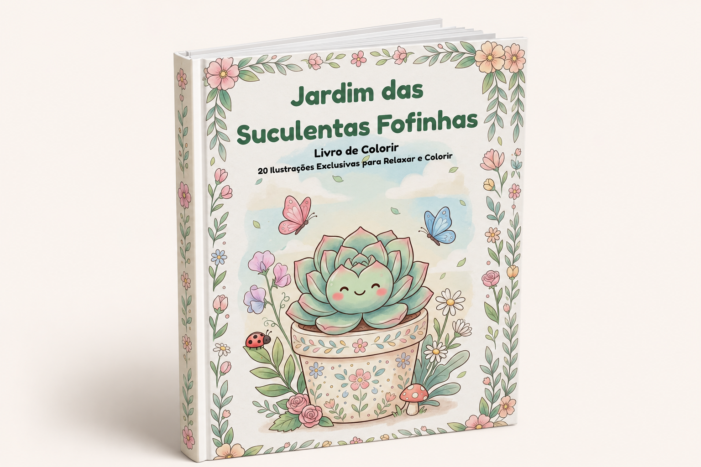
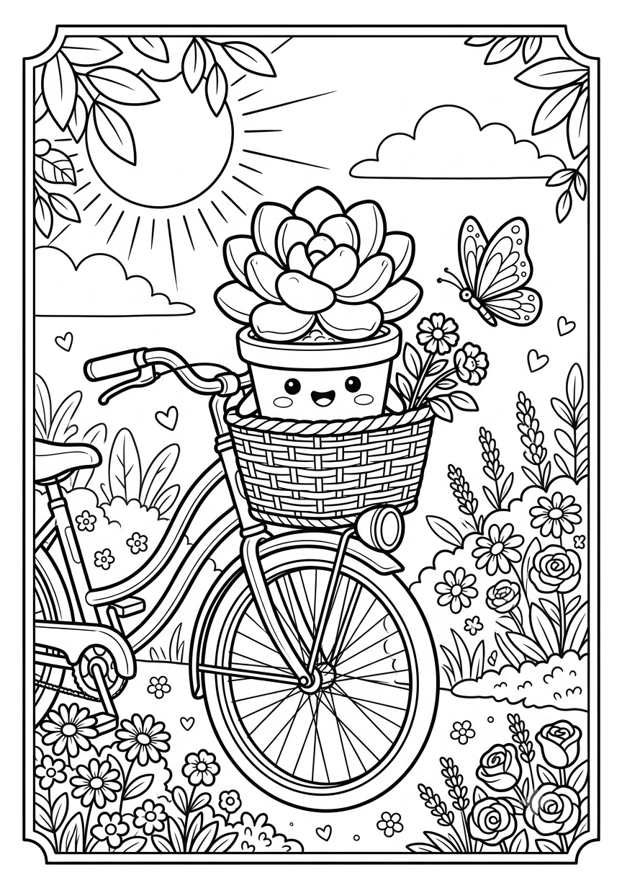
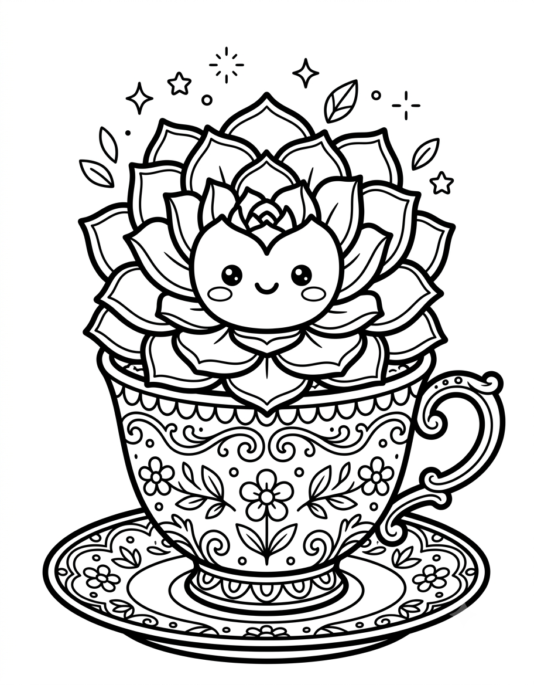

Jardim das Suculentas Fofinhas
R$14,90
🌿 Quero Meu Livro Agora
Um cantinho de papel pra você respirar fundo, pegar seus lápis e deixar cada vasinho fofo ganhar vida — suculentas sorridentes, borboletas e moldurinhas florais em páginas prontas pra imprimir.
Pagamento seguro · Acesso vitalício · Entrega automática

Oferta Especial
Cada página foi desenhada à mão (digitalmente, com muito carinho) pra ser um momento de calma no seu dia.
Suculentas com carinha, vasinhos decorados e moldurinhas florais — cada uma um cantinho novo pra explorar.
Borboletas, joaninhas e cogumelinhos escondidos nos cantos, pra colorir com calma e sem pressa.
Alta resolução, pronto pra imprimir em casa ou numa gráfica — quantas cópias você quiser.
Assim que a compra é aprovada, o link do seu jardim chega direitinho no seu e-mail.
Essa fofa aqui é só uma amostra do que te espera dentro do livro.


Neste livro você encontrará 20 ilustrações exclusivas de suculentas em estilo kawaii, preparadas para proporcionar uma experiência divertida e relaxante.
Cada página foi desenvolvida para ser agradável de colorir e ideal para quem deseja desacelerar a rotina.
Acesso imediato, impressão ilimitada e um cantinho novo de calma sempre que precisar.
Pagamento seguro · Acesso vitalício · Entrega automática
Assim que o pagamento é aprovado, você recebe um e-mail com o link de download do PDF em alta resolução.
Sim! O acesso é vitalício e você pode imprimir quantas cópias quiser, para você ou pra presentear.
Não, é um PDF comum — abre em qualquer celular, tablet ou computador.
Todas as páginas estão em formato A4, prontas para impressão doméstica ou em gráfica.